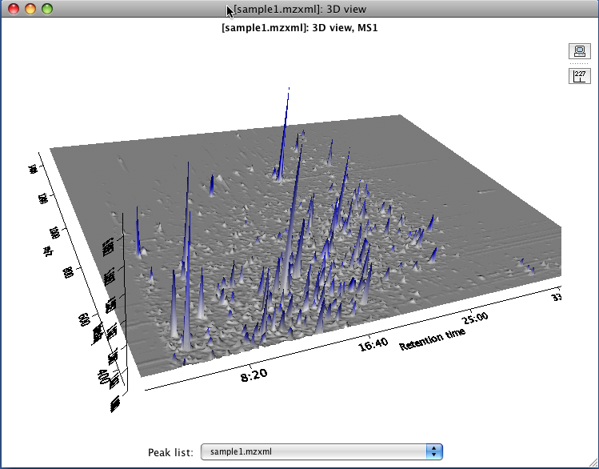
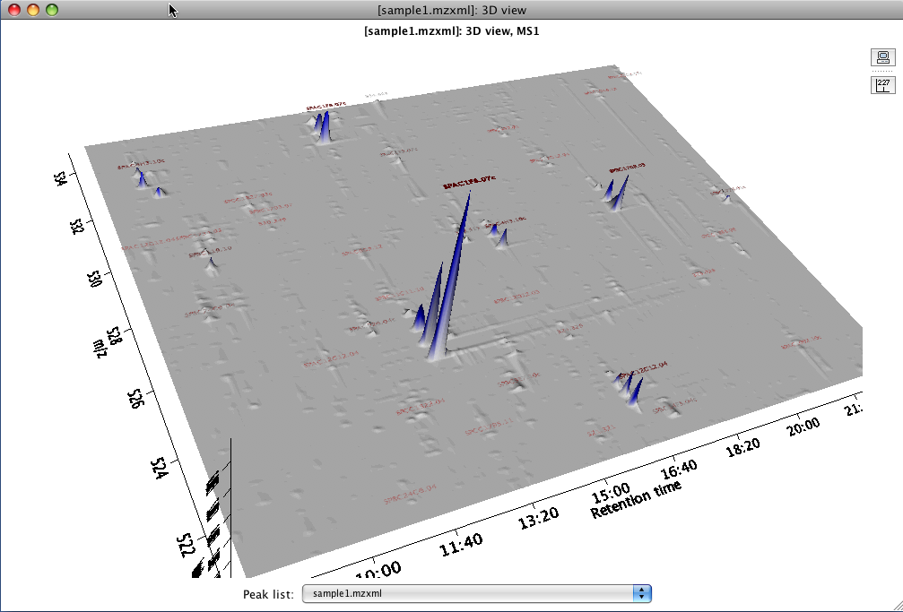
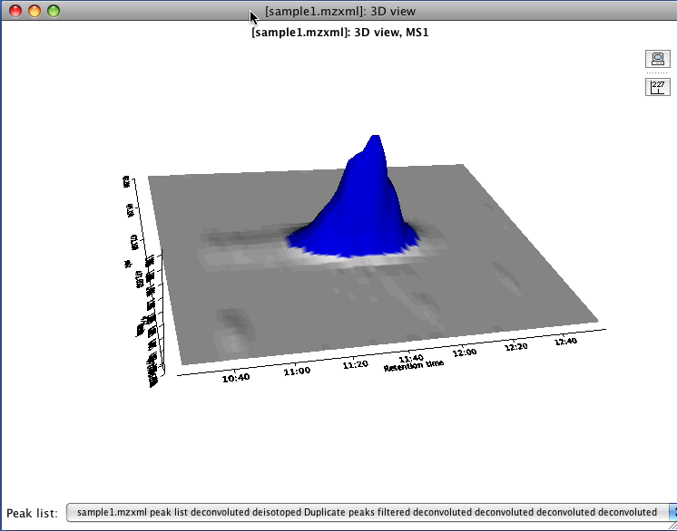
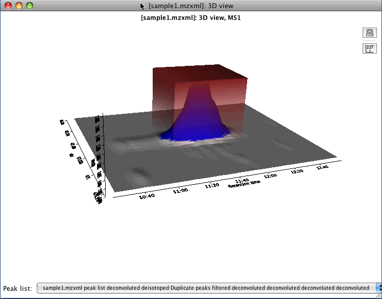

This tool presents a three dimensional plot where X axis represents the retention time, Y axis the m/z value and Z axis the intensity of the signal. This plot is the collection of all the information from the raw data in a graphical representation.
Additionally in the parameters window, the button "Set automatically" allows the user to set all the ranges automatically. MZmine will use the maximum ranges allowed by the raw data.
This plot is using the third part library JfreeChart for its basic functionality. To zoom in and out, use the third button functionality of the mouse. Also by click left button and dragging the mouse, the user can "rotate" the plot in any direction. If right button is used instead, the user can "move" the plot to any position.

The toolbar contains two buttons, "Set properties" and "Toggle displaying peaks values". The first one open a pop-up window where the user can define the rage color depending the intensity and other characteristics of the plot. This properties depend on the JFreeChart library.
The button for displaying peaks values turn on/off the labels of the peaks. If a peak list is associated with the visualized raw data in the current project, the label of each peak could be the identity of the peak or the representative mass (m/z) of the peak.

This plot also display the region where the peak was identified. By making Shift + right click over the label of the peak the user can observe a red cube which represents the space that covers the selected peak in terms of retention time, m/z, intensity.


At the bottom of the 3D window there is a combo box where the user can select any peak list associated with the displayed raw data. If the user selects a different one than the current, the plot automatically changes the displayed labels of the peaks, according with the selected peak list identifications.